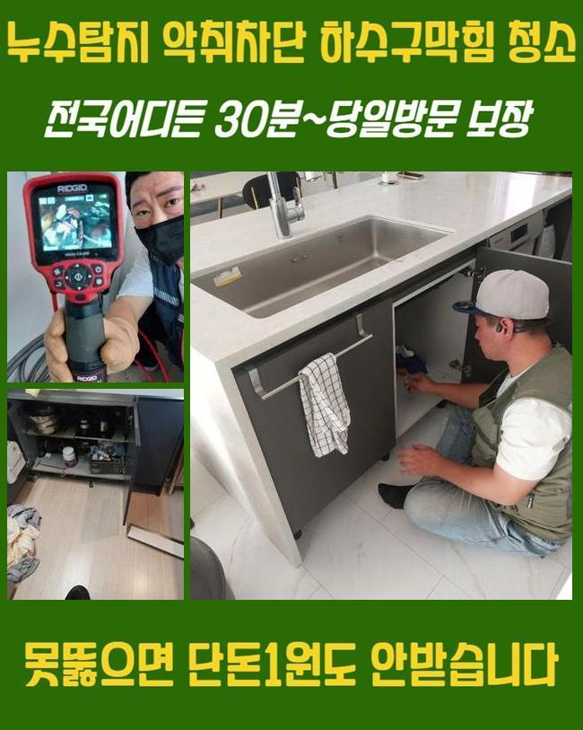
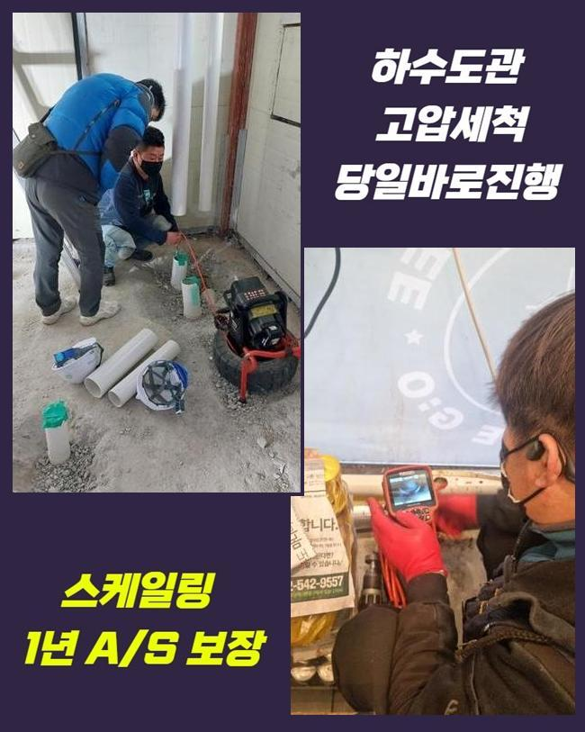
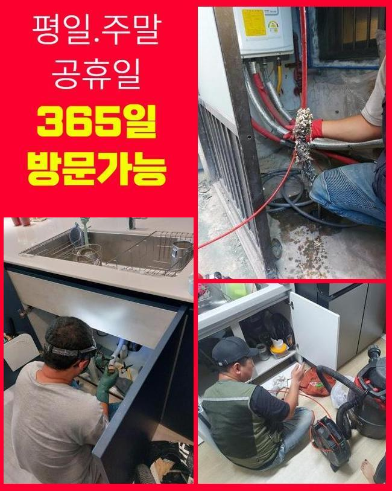
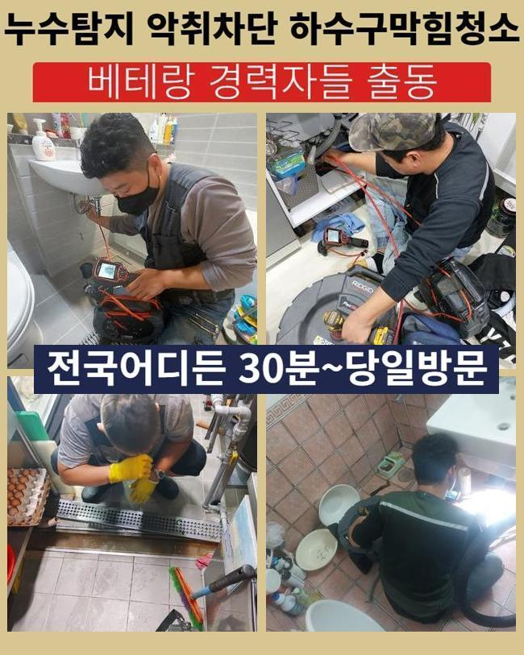
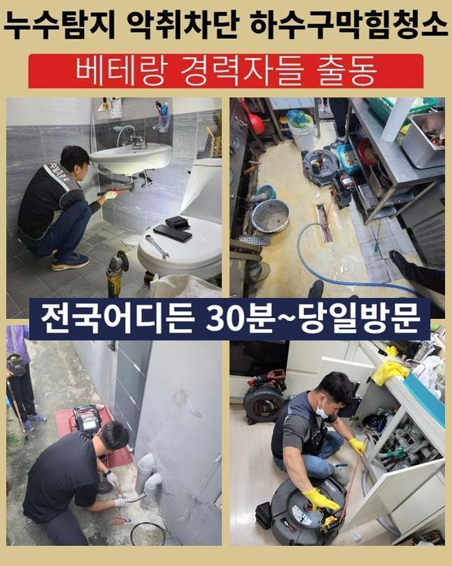
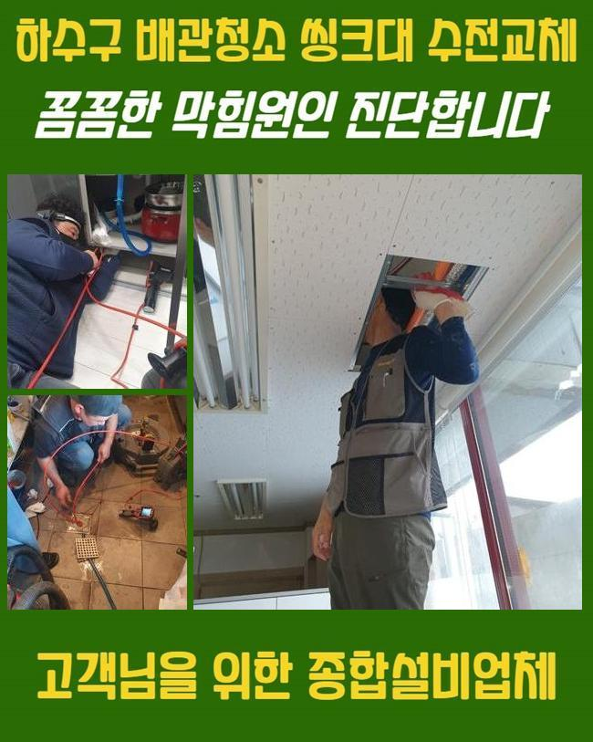

🏠 종로 원남동욕실막힘 혜화동 배관내시경카메라 설비공사
용인 남동 하수구막힘 전문 시공 후기

📋 작업 개요
- 위치: 용인 남동, 남동, 용인
- 서비스 유형: 하수구막힘, 배관막힘, 역류해결, 배관청소, 설비공사
- 작업 일시: 2024. 11. 18. 19:12
- 업체명: 하수구수사대 (010-5615-2118)
🔍 문제 상황
종로 원남동욕실막힘 혜화동 배관내시경카메라 설비공사
배수구에 결함이 생기게되어 막혀버리는 상황이 심해졌다는 의뢰를 통하여 배수관의 진단들을 진행해보기 위하여 즉시 찾아뵈었습니다
하수시스템은 가볍게 해결되는게 쉽지않고 역류한다던지 냄새처럼 발전된 양상들로 진행될 수 있는 확률이 높기에 서두른 해결이 우선되어야해요
문제가 분명함을 인지하셨을 땐 되는대로 처리를 떠올려주시는게 우선입니다
또한 배수시설은 방치하면 증상들이 불거지는 시간들도 가속화되기에 선제적인 대처가 중요한것이죠
금일에는 하수시스템의 중요성들과 주된 원인 및 목격되었을 시 어떤 방법을 통하는게 좋은것인지 저희전문진이 내방했었던 현장내용을 토대로 말씀드릴게요
의뢰인의 문의를 통하여 저희들이 내방한 현장의 경우 구분건물로서 가구들이 메인관로를 공유했던 구조로 파악되었습니다
배수관이 막혀 세대 별로 이런저런 증상이 수면 위로 떠올랐고 더군다나 하단세대는 하수를 못 쓸만큼 증상들이 가볍지 않았죠

🔎 원인 분석
💡 전문가 진단: 정밀 진단 장비를 사용하여 슬러지의 고착 여부를 판명하고 타격/세척 작업을 실시했습니다.
저희업체는 문제들을 막기위하여 운용할 기계들을 챙겨 부랴부랴 해당 주소로 도달했습니다
대체로 통수오류의 경우 여러 스팟에서 발생될 확률이 높아요
전 가구가 공용배수관을 통하기에 어느 한 구간에서 막힌다면 전체적으로 심각성을 미칩니다
이러한 상황 속에서 알맞은 대응이 진행되지 않는다면 관련증세는 수렁으로 빠져 예고없는 문제들을 주죠
물들이 안내려가는 주 원인이라고 한다면 구간 별로 쌓여진 고착물들이에요
일상 중에 배출되는 수도속엔 용해되지 못하는 잔해가 있답니다
예로 기름성분과 음식잔해는 안녹기에 하수도에서 켜켜히 쌓입니다
오염원들이 한 곳에 축적될 시 관로의 배출을 못하게하면서 여러 문제들이 생겨나게되요
이러한 문제가 분명함을 막고자한다면 트랩을 놓는다거나 때에 맞춰 배수관 전용 용액들을 써주어 청소해주는 것도 좋은데요

🔧 작업 과정
정체가 목격되었을 시 안전한 것은 전문진들의 해결책을 이용하는거죠
해당 사실을 알고 계시지만 금액문제들로 대부분의 고객님들은 위험요소가 다분히 있는 용품으로 대응을 실시하시는 경우들이 많아요
이같은 방식들은 잠깐의 방법들에 불과하고 또한 잔여물질을 깊숙한 지점으로 투입시켜 균열들이 생겨나게끔 한다는 사실! 기억해주세요
그리하여 이렇듯 자가조치로 증상의 경중을 심화시키기에 신중히 해야 합니다
저희업체는 해당 상황들을 근본적으로 해결하고자 내시경기기를 운용시켜 하수관을 여기저기 진찰합니다
내시경의 경우 각 라인을 보여주는 장비로서 눈으로 검수에 무리가 있는 구조적인 결함을 체크하고 이물의 양상을 어렵지않게 파악하게 됩니다
이번 현장으로서는 공동라인을 필두로 범위별로 잔해가 축적했었던 상태였어요
평소는 스프링장비나 샤프트장비를 이용하여 잔해를 청소하겠으나 오늘처럼 범위를 기준으로 막혔다면 고수압작업이 필요하겠습니다
고압수의 청소방법은 내구성에 악영향을 미치지않게 노즐부분을 골라 고압수로 하수관을 깨끗히하는 절차에요
해당 과정은 돌과 같이 굳어진 잔해들을 조속히 청소해주고 각 관로가 오랫동안 배수장애를 겪고 있는 상황에서 유용하게 쓰이죠
반대로 하수관의 내구성과 관련하여 해당 작업이 목표인 관로에 악영향을 발생케할 여지가 있어 관로의 상태들을 점검해주고 지속적으로 구간에 따라서 세기를 조절해주는게 우선되겠습니다
이러한 일련의 단계들을 지속한다면 지금껏 누적된 잔해가 제거되는것을 관찰하게 됩니다
이물제거가 완료되면 관로를 내시경으로 관찰하면 현재의 배수관의 컨디션이 확실히 달라진걸 관찰하게 됩니다
이와같이 각 기기들을 사용해주면 하수구 이상 증세를 수월히 처리할 수 있답니다


✅ 작업 완료
저희전문진은 고객님들이 이러한 문제들로 스트레스를 받고 계시는 중이라면 조속히 해결코자 즉시 달려갈 준비들을 해두었어요
증세를 목격했을 땐 방치하지 마시고 문의하시면 신속히 여러분들을 돕겠습니다
배수가 안되어 인한 불편들을 막기위하여서는 때에 맞춰 예방을 속행하는것이 가장 중요한 요소입니다
이용하시면서 배관 컨디션을 유지시키는 방식으로 통수 관련 사고가 다가오기전에 예방해주시는 것이 가장 훌륭한 방법이 아닐까 싶습니다



⚠️ 하수구 배관 막힘 예방 및 관리 가이드
- ✅ 머리카락, 비닐, 물티슈 등 물에 분해되지 않는 이물질은 하수구 유입을 절대 금지해 주세요.
- ✅ 하수구 거름망을 씌우고 모여진 이물질은 주기적으로 쓰레기통에 바로 비워주셔야 합니다.
- ✅ 배관 노후가 심할 경우 이물질이 더 쉽게 걸리므로 주기적인 배관 세척(고압세척 등)을 권장합니다.
- ✅ 작업 후 1년 이내 재발 시 하수구수사대에서 무상 A/S 보증 서비스를 제공합니다.
💡 핵심 정리
- 확실한 장비 작업(내시경 점검 및 샤프트 스케일링)으로 원인을 뿌리 뽑습니다.
- 작업 후 1년 이내에 동일한 부위 재발 시 100% 무상 A/S 서비스를 보장합니다.
- 서울 · 경기 · 인천 전 지역에 24시간 언제든 긴급 출동할 수 있도록 항시 대기 중입니다.
❓ 자주 묻는 질문 (FAQ)
🚨 용인 남동 하수구막힘 문제로 고민이신가요?
정확한 원인 진단과 확실한 시공으로 재발 없는 해결을 약속드립니다.
24시간 긴급 출동 | 서울 · 경기 · 인천 전지역 | 1년 내 재발 시 무상 A/S